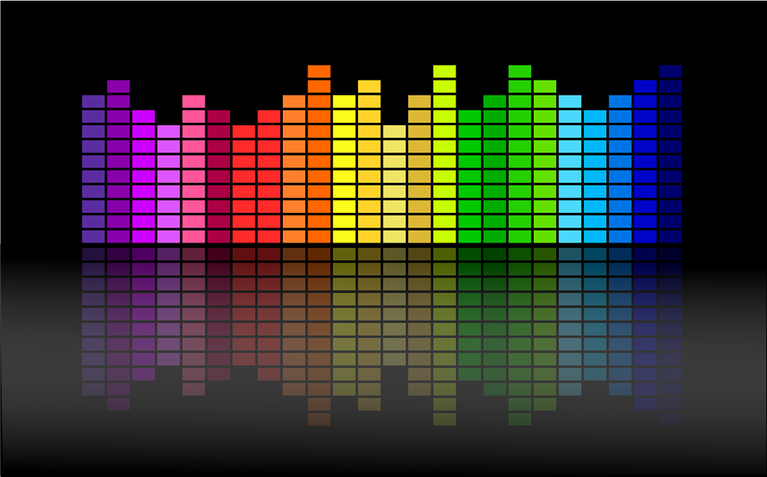

ECE 477 Team 8

PSSC's
- The ability to interface with an external Audio Codec using I2S that delivers digital data sampled at a 16-bit resolution from an electric guitar and outputs analog audio.
- The ability to use Bluetooth data received from an Android cell phone to control audio equalization on the Receiver PCB using UART.
- The ability to apply audio effects & equalization such as bass, middle, treble, distortion, and reverb on digitally sampled audio using Digital Signal Processing.
- The ability to use a developed Android app to pass user-customizable audio equalization data to the receiver MCU using inbuilt cell phone Bluetooth.
- The ability to power the system using an external battery while being able to measure remaining battery levels using a coulomb meter and displaying it using an LED based UI.